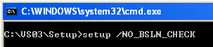
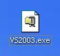
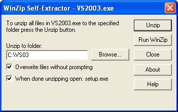
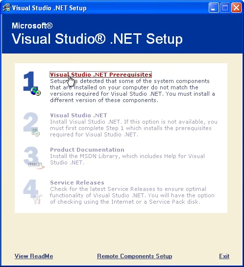
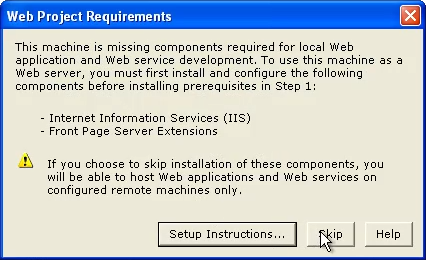
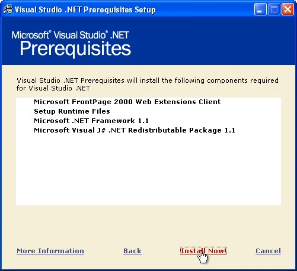
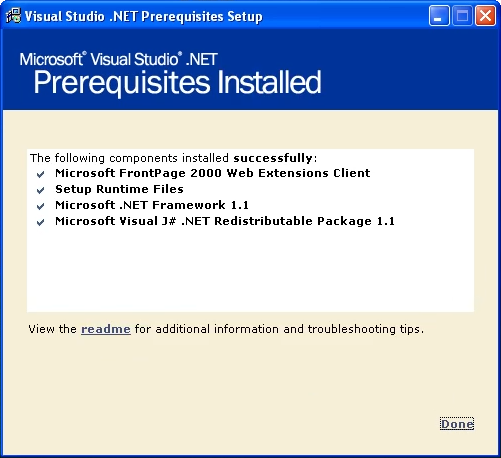
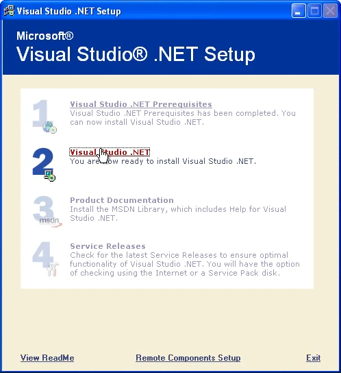
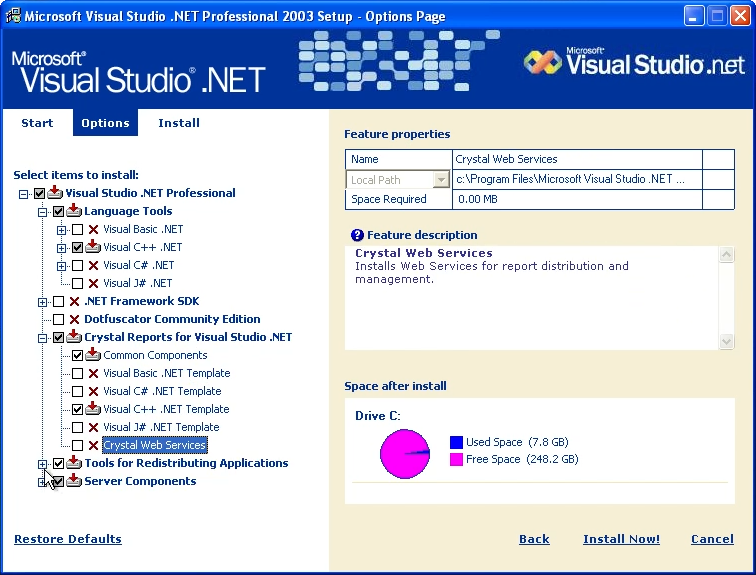
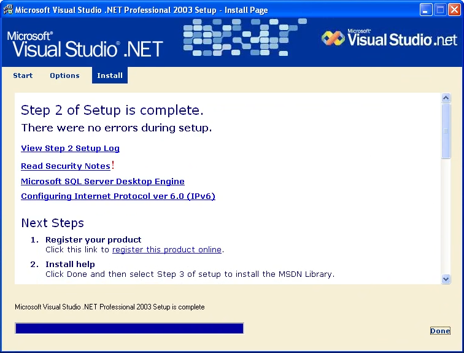

Visual Studio .NET 2003 SetupVisual Studio 2003 is fairly simple to set-up, but if you're only setting it up for Blocks3D you might want to make it ligher by only selecting useful programs.Warning - This setup can encounter some issues. Please refer to the Common Issues section if you encounter one. Common Issues1. Prerequisites not met and failing to install
If you tried to install prerequisites already, and are completely unable, there's a simple workaround  This will bypass prerequisite checks, and you can continue installing Visual Studio .NET 2003. This will start you from step 3. 2. Cannot install on x64 based systems
Visual Studio .NET 2003 can install on x64 based systems, this is just some strange quirk in the installer. InstallationFor the purpose of this installation, we are extracting insaller files to C:\VS03, but you can use any that work for you1. Run the Extractor
This step depends on your installation medium. Visual Studio .NET 2003 came on both CD and EXE formfactor. If you have a CD, you can skip this step and move on to step 2.   When ready, press Unzip:
Once complete, the setup should start itself. If not, you can navigate to the your folder and run setup.exe. 2. Setup Prerequisites
Setup has now started, and first you will need to install prerequisites. Select option 1 on the list.   When you reach the prerequisites window, simply hit "Install Now!"   Everything should install successfully, and you will be able to proceed with the next step. If something failed, you likely have a newer .NET framework or Windows installed. Refer to Common Issue 1. 3. Setup Visual Studio .NET 2003
You will be returned back into the main page. If you are coming from Common Issue 1, the Visual Studio installer will have already started. Otherwise,  Accept the licence agreement, and you will be given a page with many options. Default options will work just fine, however if you only want Visual Studio .NET 2003 for Blocks3D, the only important option is the Visual C++ Language Tools. You can select options similar to below:  Now you can press "Install Now!"  Now with the installation complete, you are ready to develop for Blocks3D! |
|||